Block Entry 0 lines
No instructions in this block.
Pipeline report
Generated from the current MIR input and analysis stages.
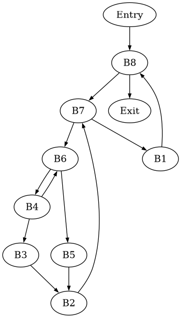
Tracederivation steps
| block | branch | condition symbols | true edge | false edge | prefixes shown | path prefix | status |
|---|---|---|---|---|---|---|---|
| No conditional branches | None | None | None | None | 0 | true | no ifTrue / ifFalse branch lines in this input |
Algorithm metrics
| mode | variables | dependency blocks | max Qt | total Qadd mass | L1 Δ vs CFG | hot refs | status |
|---|---|---|---|---|---|---|---|
| Syntactic | 0 | 0 | 0 | 0 | 0 | 0 | aggregate over displayed blocks |
| Local dependency | 0 | 0 | 0 | 0 | 0 | 0 | aggregate over displayed blocks |
| CFG dependency | 0 | 0 | 0 | 0 | 0 | 0 | aggregate over displayed blocks |
| Versioned dependency | 0 | 0 | 0 | 0 | 0 | 0 | aggregate over displayed blocks |
Syntactic branch variables
| block | Qt | hot variables | Qadd(block, var) | status |
|---|---|---|---|---|
| Entry | 0 | None | None | alpha=0.35, beta=0.50; syntactic C relation |
| B1 | 0 | None | None | alpha=0.35, beta=0.50; syntactic C relation |
| B2 | 0 | None | None | alpha=0.35, beta=0.50; syntactic C relation |
| B3 | 0 | None | None | alpha=0.35, beta=0.50; syntactic C relation |
| B4 | 0 | None | None | alpha=0.35, beta=0.50; syntactic C relation |
| B5 | 0 | None | None | alpha=0.35, beta=0.50; syntactic C relation |
| B6 | 0 | None | None | alpha=0.35, beta=0.50; syntactic C relation |
| B7 | 0 | None | None | alpha=0.35, beta=0.50; syntactic C relation |
| B8 | 0 | None | None | alpha=0.35, beta=0.50; syntactic C relation |
| Exit | 0 | None | None | alpha=0.35, beta=0.50; syntactic C relation |
Local dependency variables
| block | Qt | hot variables | Qadd(block, var) | status |
|---|---|---|---|---|
| Entry | 0 | None | None | alpha=0.35, beta=0.50; local dependency C relation |
| B1 | 0 | None | None | alpha=0.35, beta=0.50; local dependency C relation |
| B2 | 0 | None | None | alpha=0.35, beta=0.50; local dependency C relation |
| B3 | 0 | None | None | alpha=0.35, beta=0.50; local dependency C relation |
| B4 | 0 | None | None | alpha=0.35, beta=0.50; local dependency C relation |
| B5 | 0 | None | None | alpha=0.35, beta=0.50; local dependency C relation |
| B6 | 0 | None | None | alpha=0.35, beta=0.50; local dependency C relation |
| B7 | 0 | None | None | alpha=0.35, beta=0.50; local dependency C relation |
| B8 | 0 | None | None | alpha=0.35, beta=0.50; local dependency C relation |
| Exit | 0 | None | None | alpha=0.35, beta=0.50; local dependency C relation |
CFG dependency variables
| block | Qt | hot variables | Qadd(block, var) | status |
|---|---|---|---|---|
| Entry | 0 | None | None | alpha=0.35, beta=0.50; cfg dependency C relation |
| B1 | 0 | None | None | alpha=0.35, beta=0.50; cfg dependency C relation |
| B2 | 0 | None | None | alpha=0.35, beta=0.50; cfg dependency C relation |
| B3 | 0 | None | None | alpha=0.35, beta=0.50; cfg dependency C relation |
| B4 | 0 | None | None | alpha=0.35, beta=0.50; cfg dependency C relation |
| B5 | 0 | None | None | alpha=0.35, beta=0.50; cfg dependency C relation |
| B6 | 0 | None | None | alpha=0.35, beta=0.50; cfg dependency C relation |
| B7 | 0 | None | None | alpha=0.35, beta=0.50; cfg dependency C relation |
| B8 | 0 | None | None | alpha=0.35, beta=0.50; cfg dependency C relation |
| Exit | 0 | None | None | alpha=0.35, beta=0.50; cfg dependency C relation |
Versioned dependency variables
| block | Qt | hot variables | Qadd(block, var) | status |
|---|---|---|---|---|
| Entry | 0 | None | None | alpha=0.35, beta=0.50; versioned dependency C relation |
| B1 | 0 | None | None | alpha=0.35, beta=0.50; versioned dependency C relation |
| B2 | 0 | None | None | alpha=0.35, beta=0.50; versioned dependency C relation |
| B3 | 0 | None | None | alpha=0.35, beta=0.50; versioned dependency C relation |
| B4 | 0 | None | None | alpha=0.35, beta=0.50; versioned dependency C relation |
| B5 | 0 | None | None | alpha=0.35, beta=0.50; versioned dependency C relation |
| B6 | 0 | None | None | alpha=0.35, beta=0.50; versioned dependency C relation |
| B7 | 0 | None | None | alpha=0.35, beta=0.50; versioned dependency C relation |
| B8 | 0 | None | None | alpha=0.35, beta=0.50; versioned dependency C relation |
| Exit | 0 | None | None | alpha=0.35, beta=0.50; versioned dependency C relation |
Q_add algorithm profile
| chart |
|---|
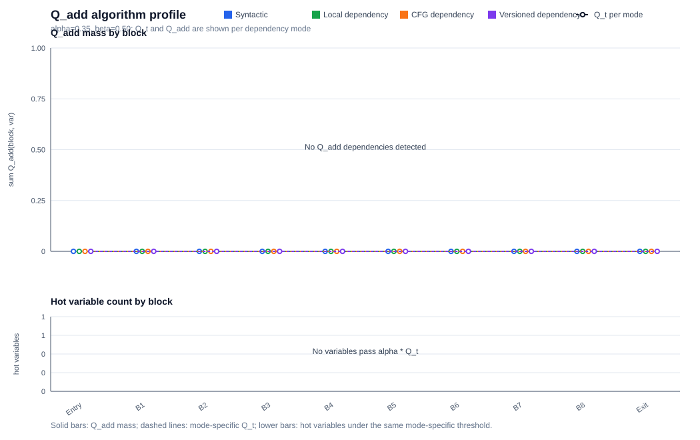 |
Bounded node tree
| loop | depth | node | via condition | children | inferred role |
|---|---|---|---|---|---|
| B2 ← B3 | 0 | B2 | loop header | B7 | linear block |
| B2 ← B3 | 1 | B7 | true | B1, B6 | linear block |
| B2 ← B3 | 2 | B1 | true | B8 | linear block |
| B2 ← B3 | 3 | B8 | true | B7, Exit | linear block |
| B2 ← B3 | 2 | B6 | true | B4, B5 | linear block |
| B2 ← B3 | 3 | B4 | true | B3, B6 | linear block |
| B2 ← B3 | 4 | B3 | true | B2 | linear block |
| B2 ← B3 | 3 | B5 | true | B2 | linear block |
| B3 ← B4 | 0 | B3 | loop header | B2 | linear block |
| B3 ← B4 | 1 | B2 | true | B7 | linear block |
| B3 ← B4 | 2 | B7 | true | B1, B6 | linear block |
| B3 ← B4 | 3 | B1 | true | B8 | linear block |
| B3 ← B4 | 4 | B8 | true | B7, Exit | linear block |
| B3 ← B4 | 3 | B6 | true | B4, B5 | linear block |
| B3 ← B4 | 4 | B4 | true | B3, B6 | linear block |
| B3 ← B4 | 4 | B5 | true | B2 | linear block |
| B2 ← B5 | 0 | B2 | loop header | B7 | linear block |
| B2 ← B5 | 1 | B7 | true | B1, B6 | linear block |
| B2 ← B5 | 2 | B1 | true | B8 | linear block |
| B2 ← B5 | 3 | B8 | true | B7, Exit | linear block |
| B2 ← B5 | 2 | B6 | true | B4, B5 | linear block |
| B2 ← B5 | 3 | B4 | true | B3, B6 | linear block |
| B2 ← B5 | 4 | B3 | true | B2 | linear block |
| B2 ← B5 | 3 | B5 | true | B2 | linear block |
| B4 ← B6 | 0 | B4 | loop header | B3, B6 | linear block |
| B4 ← B6 | 1 | B3 | true | B2 | linear block |
| B4 ← B6 | 2 | B2 | true | B7 | linear block |
| B4 ← B6 | 3 | B7 | true | B1, B6 | linear block |
| B4 ← B6 | 4 | B1 | true | B8 | linear block |
| B4 ← B6 | 4 | B6 | true | B4, B5 | linear block |
| B4 ← B6 | 1 | B6 | true | B4, B5 | linear block |
| B4 ← B6 | 2 | B5 | true | B2 | linear block |
| B4 ← B6 | 3 | B2 | true | B7 | linear block |
| B4 ← B6 | 4 | B7 | true | B1, B6 | linear block |
| B5 ← B6 | 0 | B5 | loop header | B2 | linear block |
| B5 ← B6 | 1 | B2 | true | B7 | linear block |
| B5 ← B6 | 2 | B7 | true | B1, B6 | linear block |
| B5 ← B6 | 3 | B1 | true | B8 | linear block |
| B5 ← B6 | 4 | B8 | true | B7, Exit | linear block |
| B5 ← B6 | 3 | B6 | true | B4, B5 | linear block |
| B5 ← B6 | 4 | B4 | true | B3, B6 | linear block |
| B1 ← B7 | 0 | B1 | loop header | B8 | linear block |
| B1 ← B7 | 1 | B8 | true | B7, Exit | linear block |
| B1 ← B7 | 2 | B7 | true | B1, B6 | linear block |
| B1 ← B7 | 3 | B6 | true | B4, B5 | linear block |
| B1 ← B7 | 4 | B4 | true | B3, B6 | linear block |
| B1 ← B7 | 4 | B5 | true | B2 | linear block |
| B6 ← B7 | 0 | B6 | loop header | B4, B5 | linear block |
| B6 ← B7 | 1 | B4 | true | B3, B6 | linear block |
| B6 ← B7 | 2 | B3 | true | B2 | linear block |
| B6 ← B7 | 3 | B2 | true | B7 | linear block |
| B6 ← B7 | 4 | B7 | true | B1, B6 | linear block |
| B6 ← B7 | 1 | B5 | true | B2 | linear block |
| B6 ← B7 | 2 | B2 | true | B7 | linear block |
| B6 ← B7 | 3 | B7 | true | B1, B6 | linear block |
| B6 ← B7 | 4 | B1 | true | B8 | linear block |
| B7 ← B8 | 0 | B7 | loop header | B1, B6 | linear block |
| B7 ← B8 | 1 | B1 | true | B8 | linear block |
| B7 ← B8 | 2 | B8 | true | B7, Exit | linear block |
| B7 ← B8 | 1 | B6 | true | B4, B5 | linear block |
| B7 ← B8 | 2 | B4 | true | B3, B6 | linear block |
| B7 ← B8 | 3 | B3 | true | B2 | linear block |
| B7 ← B8 | 4 | B2 | true | B7 | linear block |
| B7 ← B8 | 2 | B5 | true | B2 | linear block |
| B7 ← B8 | 3 | B2 | true | B7 | linear block |
Pattern inference
| loop | pattern | evidence | inferred sketch | status |
|---|---|---|---|---|
| B2 ← B3 | loop guard | B2 | not inferred | missing branch guard |
| B2 ← B3 | induction update | B3 | not inferred | not inferred |
| B2 ← B3 | guarded accumulator | None | not inferred | requires two branch arms updating the same variable |
| B2 ← B3 | quantified sketch | B2 | not inferred | report-level formula; not emitted to a solver |
| B3 ← B4 | loop guard | B3 | not inferred | missing branch guard |
| B3 ← B4 | induction update | B4 | not inferred | not inferred |
| B3 ← B4 | guarded accumulator | None | not inferred | requires two branch arms updating the same variable |
| B3 ← B4 | quantified sketch | B3 | not inferred | report-level formula; not emitted to a solver |
| B2 ← B5 | loop guard | B2 | not inferred | missing branch guard |
| B2 ← B5 | induction update | B5 | not inferred | not inferred |
| B2 ← B5 | guarded accumulator | None | not inferred | requires two branch arms updating the same variable |
| B2 ← B5 | quantified sketch | B2 | not inferred | report-level formula; not emitted to a solver |
| B4 ← B6 | loop guard | B4 | not inferred | missing branch guard |
| B4 ← B6 | induction update | B6 | not inferred | not inferred |
| B4 ← B6 | guarded accumulator | None | not inferred | requires two branch arms updating the same variable |
| B4 ← B6 | quantified sketch | B4 | not inferred | report-level formula; not emitted to a solver |
| B5 ← B6 | loop guard | B5 | not inferred | missing branch guard |
| B5 ← B6 | induction update | B6 | not inferred | not inferred |
| B5 ← B6 | guarded accumulator | None | not inferred | requires two branch arms updating the same variable |
| B5 ← B6 | quantified sketch | B5 | not inferred | report-level formula; not emitted to a solver |
| B1 ← B7 | loop guard | B1 | not inferred | missing branch guard |
| B1 ← B7 | induction update | B7 | not inferred | not inferred |
| B1 ← B7 | guarded accumulator | None | not inferred | requires two branch arms updating the same variable |
| B1 ← B7 | quantified sketch | B1 | not inferred | report-level formula; not emitted to a solver |
| B6 ← B7 | loop guard | B6 | not inferred | missing branch guard |
| B6 ← B7 | induction update | B7 | not inferred | not inferred |
| B6 ← B7 | guarded accumulator | None | not inferred | requires two branch arms updating the same variable |
| B6 ← B7 | quantified sketch | B6 | not inferred | report-level formula; not emitted to a solver |
| B7 ← B8 | loop guard | B7 | not inferred | missing branch guard |
| B7 ← B8 | induction update | B8 | not inferred | not inferred |
| B7 ← B8 | guarded accumulator | None | not inferred | requires two branch arms updating the same variable |
| B7 ← B8 | quantified sketch | B7 | not inferred | report-level formula; not emitted to a solver |
Automaton walkthrough
| loop | state | case | node | condition | action | next | status |
|---|---|---|---|---|---|---|---|
| B2 ← B3 | S0 | loop exits before next iteration | B2 | no guard | emit terminal leaf for current k | REJECT | terminal case similar to a leaf in the execution tree |
| B2 ← B3 | S0 | loop continues | B2 | no guard | enter loop body for iteration k | REJECT | missing loop guard |
| B2 ← B3 | S1 | inner branch | None | not inferred | no two-arm accumulator update found | REJECT | pattern incomplete |
| B2 ← B3 | S2 | latch / repeat | B3 | after either arm | no linear induction update found | REJECT | pattern incomplete |
| B3 ← B4 | S0 | loop exits before next iteration | B3 | no guard | emit terminal leaf for current k | REJECT | terminal case similar to a leaf in the execution tree |
| B3 ← B4 | S0 | loop continues | B3 | no guard | enter loop body for iteration k | REJECT | missing loop guard |
| B3 ← B4 | S1 | inner branch | None | not inferred | no two-arm accumulator update found | REJECT | pattern incomplete |
| B3 ← B4 | S2 | latch / repeat | B4 | after either arm | no linear induction update found | REJECT | pattern incomplete |
| B2 ← B5 | S0 | loop exits before next iteration | B2 | no guard | emit terminal leaf for current k | REJECT | terminal case similar to a leaf in the execution tree |
| B2 ← B5 | S0 | loop continues | B2 | no guard | enter loop body for iteration k | REJECT | missing loop guard |
| B2 ← B5 | S1 | inner branch | None | not inferred | no two-arm accumulator update found | REJECT | pattern incomplete |
| B2 ← B5 | S2 | latch / repeat | B5 | after either arm | no linear induction update found | REJECT | pattern incomplete |
| B4 ← B6 | S0 | loop exits before next iteration | B4 | no guard | emit terminal leaf for current k | REJECT | terminal case similar to a leaf in the execution tree |
| B4 ← B6 | S0 | loop continues | B4 | no guard | enter loop body for iteration k | REJECT | missing loop guard |
| B4 ← B6 | S1 | inner branch | None | not inferred | no two-arm accumulator update found | REJECT | pattern incomplete |
| B4 ← B6 | S2 | latch / repeat | B6 | after either arm | no linear induction update found | REJECT | pattern incomplete |
| B5 ← B6 | S0 | loop exits before next iteration | B5 | no guard | emit terminal leaf for current k | REJECT | terminal case similar to a leaf in the execution tree |
| B5 ← B6 | S0 | loop continues | B5 | no guard | enter loop body for iteration k | REJECT | missing loop guard |
| B5 ← B6 | S1 | inner branch | None | not inferred | no two-arm accumulator update found | REJECT | pattern incomplete |
| B5 ← B6 | S2 | latch / repeat | B6 | after either arm | no linear induction update found | REJECT | pattern incomplete |
| B1 ← B7 | S0 | loop exits before next iteration | B1 | no guard | emit terminal leaf for current k | REJECT | terminal case similar to a leaf in the execution tree |
| B1 ← B7 | S0 | loop continues | B1 | no guard | enter loop body for iteration k | REJECT | missing loop guard |
| B1 ← B7 | S1 | inner branch | None | not inferred | no two-arm accumulator update found | REJECT | pattern incomplete |
| B1 ← B7 | S2 | latch / repeat | B7 | after either arm | no linear induction update found | REJECT | pattern incomplete |
| B6 ← B7 | S0 | loop exits before next iteration | B6 | no guard | emit terminal leaf for current k | REJECT | terminal case similar to a leaf in the execution tree |
| B6 ← B7 | S0 | loop continues | B6 | no guard | enter loop body for iteration k | REJECT | missing loop guard |
| B6 ← B7 | S1 | inner branch | None | not inferred | no two-arm accumulator update found | REJECT | pattern incomplete |
| B6 ← B7 | S2 | latch / repeat | B7 | after either arm | no linear induction update found | REJECT | pattern incomplete |
| B7 ← B8 | S0 | loop exits before next iteration | B7 | no guard | emit terminal leaf for current k | REJECT | terminal case similar to a leaf in the execution tree |
| B7 ← B8 | S0 | loop continues | B7 | no guard | enter loop body for iteration k | REJECT | missing loop guard |
| B7 ← B8 | S1 | inner branch | None | not inferred | no two-arm accumulator update found | REJECT | pattern incomplete |
| B7 ← B8 | S2 | latch / repeat | B8 | after either arm | no linear induction update found | REJECT | pattern incomplete |
Tracederivation steps
| family | status | why unavailable | current action |
|---|---|---|---|
| Array transformations | stub | current MIR has no array read/write syntax or array values | keep as documentation-only placeholder |
| Function summaries | stub | current MIR has param/return but no call instruction, callee identity, or call graph | keep as documentation-only placeholder |
| Heap/list/shape execution | out of scope | current MIR has no heap allocation, fields, references, aliases, or predicates | do not expand parser for this dump-first task |
| Compiled symbolic execution | out of scope | project is not compiling LLVM/C/Java into a symbolic executor | no implementation planned |
No instructions in this block.
No instructions in this block.
No instructions in this block.
No instructions in this block.
No instructions in this block.
No instructions in this block.
No instructions in this block.
No instructions in this block.
No instructions in this block.
No instructions in this block.
Tracederivation steps
| block | Entry | B1 | B2 | B3 | B4 | B5 | B6 | B7 | B8 | Exit |
|---|---|---|---|---|---|---|---|---|---|---|
| Input(block) | None | None | None | None | None | None | None | None | None | None |
| Output(block) | None | None | None | None | None | None | None | None | None | None |
| node = | Entry | B1 | B2 | B3 | B4 | B5 | B6 | B7 | B8 | Exit |
|---|---|---|---|---|---|---|---|---|---|---|
| Pred(node) | None | B7 | B3, B5 | B4 | B6 | B6 | B4, B7 | B2, B8 | Entry, B1 | B8 |
| Dom(node) | Entry | Entry, B1, B7, B8 | Entry, B2, B6, B7, B8 | Entry, B3, B4, B6, B7, B8 | Entry, B4, B6, B7, B8 | Entry, B5, B6, B7, B8 | Entry, B6, B7, B8 | Entry, B7, B8 | Entry, B8 | Entry, B8, Exit |
| Idom(node) | None | B7 | B6 | B4 | B6 | B6 | B7 | B8 | Entry | B8 |
| DF(node) | None | B8 | B7 | B2 | B2, B6 | B2 | B6, B7 | B7, B8 | B8 | None |
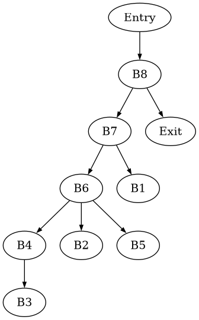
| node = | Entry | B1 | B2 | B3 | B4 | B5 | B6 | B7 | B8 | Exit |
|---|---|---|---|---|---|---|---|---|---|---|
| Pdom(node) | Entry, B8, Exit | B1, B8, Exit | B1, B2, B7, B8, Exit | B1, B2, B3, B7, B8, Exit | B1, B2, B4, B7, B8, Exit | B1, B2, B5, B7, B8, Exit | B1, B2, B6, B7, B8, Exit | B1, B7, B8, Exit | B8, Exit | Exit |
| Ipdom(node) | B8 | B8 | B7 | B2 | B2 | B2 | B2 | B1 | Exit | None |
| CD(node) | None | B8 | B7 | B4 | B6 | B6 | B4, B7 | B7, B8 | B8 | None |
Tracederivation steps
| var = |
|---|
| Blocks(var) |
| is Global |
| block = | Entry | B1 | B2 | B3 | B4 | B5 | B6 | B7 | B8 | Exit |
|---|
Tracederivation steps
Tracederivation steps
| check | status | details |
|---|---|---|
| SSA rename scope | none | None |
| Untracked variables | not renamed | None |
| Tracked definitions named | + | ok |
| Tracked uses named | + | ok |
| Unique tracked definitions | + | ok |
| Phi arity matches predecessors | + | ok |
Tracederivation steps
| join | predecessors | variable | merge preview | merge metrics | status |
|---|---|---|---|---|---|
| B2 | B3, B5 | None | No phi variables placed at this join. | preds=2, mapped=0 | structural join only |
| B6 | B4, B7 | None | No phi variables placed at this join. | preds=2, mapped=0 | structural join only |
| B7 | B2, B8 | None | No phi variables placed at this join. | preds=2, mapped=0 | structural join only |
| B8 | Entry, B1 | None | No phi variables placed at this join. | preds=2, mapped=0 | structural join only |
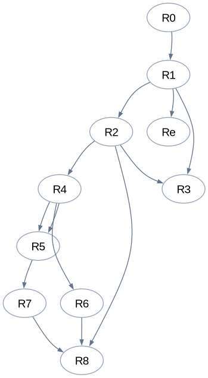
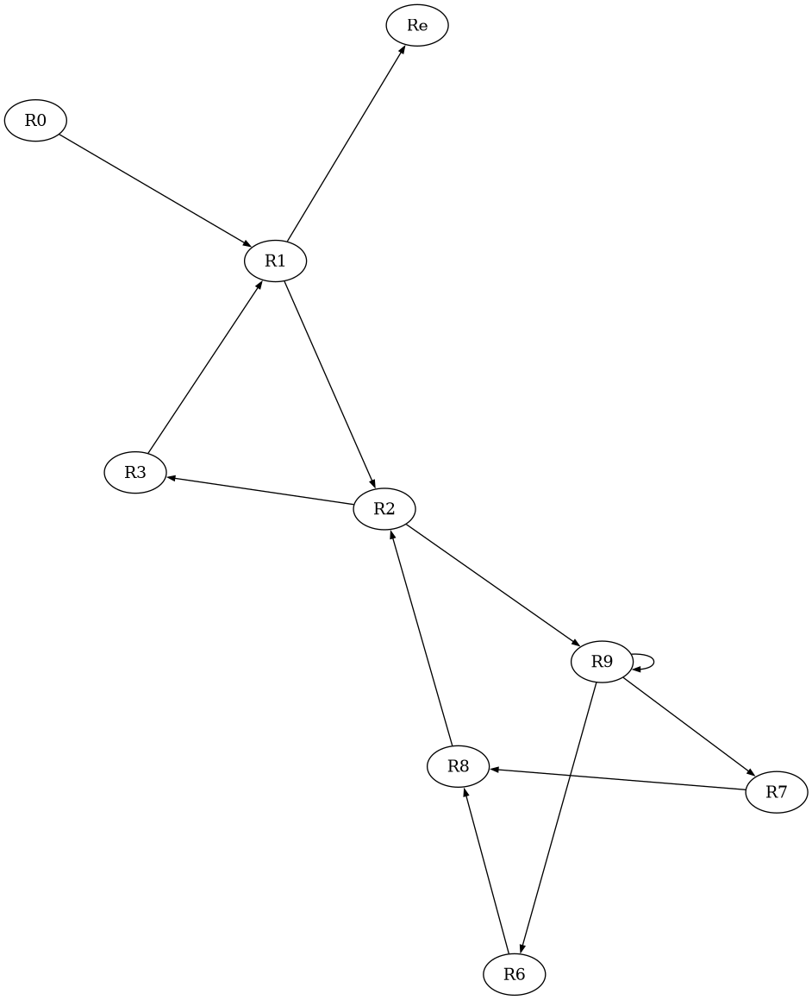
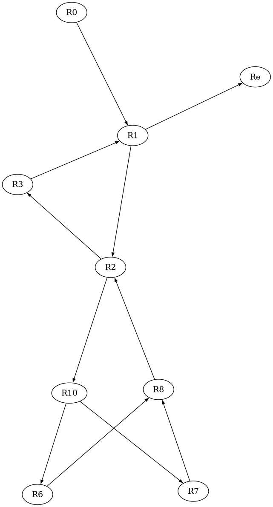
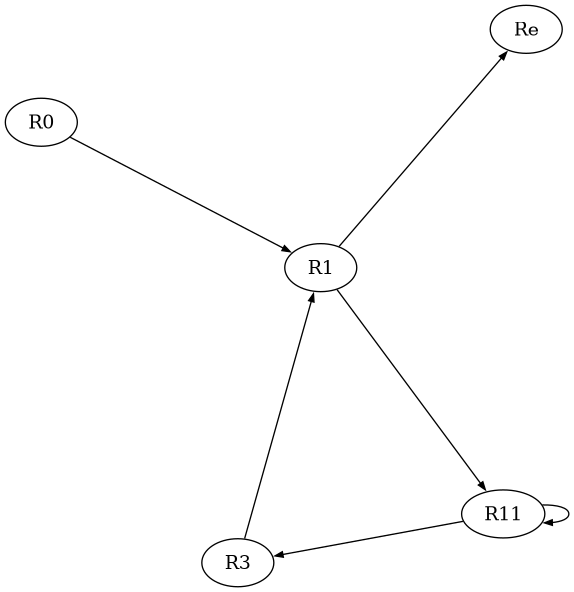
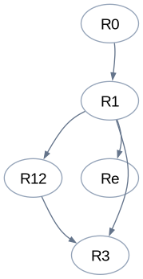
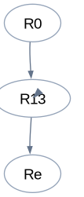
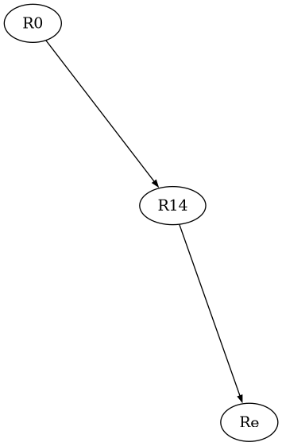
Tracederivation steps
| entry | exit | nodes | loop-free | paths shown | path summary preview | status |
|---|---|---|---|---|---|---|
| No acyclic region candidates | None | None | - | 0 | None | no conditional block with a usable immediate postdominator |
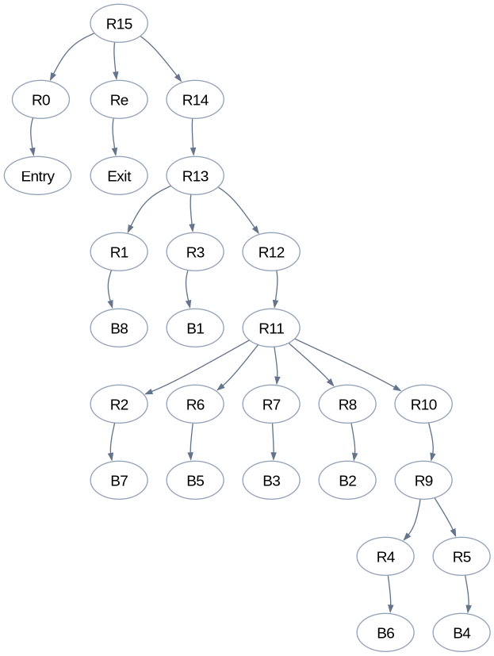
| Class | Area-Node | Area-Body | Area-Loop |
|---|---|---|---|
| Region | Re, R0, R1, R2, R3, R4, R5, R6, R7, R8 | R9, R11, R13, R15 | R10, R12, R14 |
Tracederivation steps
| block | Entry | B1 | B2 | B3 | B4 | B5 | B6 | B7 | B8 | Exit |
|---|---|---|---|---|---|---|---|---|---|---|
| genblock | None | None | None | None | None | None | None | None | None | None |
| killblock | None | None | None | None | None | None | None | None | None | None |
| region | Transfer Function | gen | kill |
|---|---|---|---|
| R9 | fR9, In[R4] = fR9, Out[B4] ∧ fR9, Out[B7] fR9, Out[6] = fR4, Out[6] ° fR9, In[R4] fR9, In[R5] = fR9, Out[B6] fR9, Out[4] = fR5, Out[4] ° fR9, In[R5] |
None | None |
| R10 | fR10, In[R9] = (fR10, Out[B4] ∧ fR10, Out[B7])* fR10, Out[R4] = fR9, Out[R4] ° fR10, In[R9] fR10, Out[R5] = fR9, Out[R5] ° fR10, In[R9] |
None | None |
| R11 | fR11, In[R2] = fR11, Out[B8] ∧ fR11, Out[B2] fR11, Out[7] = fR2, Out[7] ° fR11, In[R2] fR11, In[R10] = fR11, Out[B4] ∧ fR11, Out[B7] fR11, Out[R9] = fR10, Out[R9] ° fR11, In[R10] fR11, In[R6] = fR11, Out[B6] fR11, Out[5] = fR6, Out[5] ° fR11, In[R6] fR11, In[R8] = fR11, Out[B3] ∧ fR11, Out[B5] fR11, Out[2] = fR8, Out[2] ° fR11, In[R8] fR11, In[R7] = fR11, Out[B4] fR11, Out[3] = fR7, Out[3] ° fR11, In[R7] |
None | None |
| R12 | fR12, In[R11] = (fR12, Out[B8] ∧ fR12, Out[B2])* fR12, Out[R2] = fR11, Out[R2] ° fR12, In[R11] fR12, Out[R10] = fR11, Out[R10] ° fR12, In[R11] fR12, Out[R6] = fR11, Out[R6] ° fR12, In[R11] fR12, Out[R8] = fR11, Out[R8] ° fR12, In[R11] fR12, Out[R7] = fR11, Out[R7] ° fR12, In[R11] |
None | None |
| R13 | fR13, In[R1] = fR13, Out[Entry] ∧ fR13, Out[B1] fR13, Out[8] = fR1, Out[8] ° fR13, In[R1] fR13, In[R12] = fR13, Out[B8] ∧ fR13, Out[B2] fR13, Out[R11] = fR12, Out[R11] ° fR13, In[R12] fR13, In[R3] = fR13, Out[B7] fR13, Out[1] = fR3, Out[1] ° fR13, In[R3] |
None | None |
| R14 | fR14, In[R13] = (fR14, Out[Entry] ∧ fR14, Out[B1])* fR14, Out[R1] = fR13, Out[R1] ° fR14, In[R13] fR14, Out[R12] = fR13, Out[R12] ° fR14, In[R13] fR14, Out[R3] = fR13, Out[R3] ° fR14, In[R13] |
None | None |
| R15 | fR15, In[R0] = I fR15, Out[0] = fR0, Out[0] ° fR15, In[R0] fR15, In[R14] = fR15, Out[Entry] ∧ fR15, Out[B1] fR15, Out[R13] = fR14, Out[R13] ° fR15, In[R14] fR15, In[Re] = fR15, Out[B8] fR15, Out[Exit] = fRe, Out[Exit] ° fR15, In[Re] |
None | None |